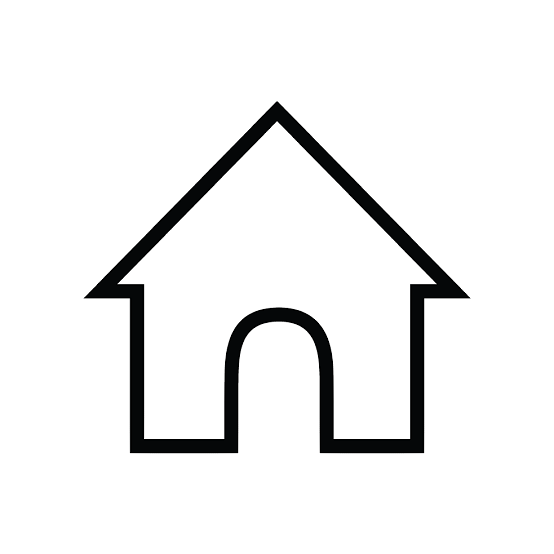
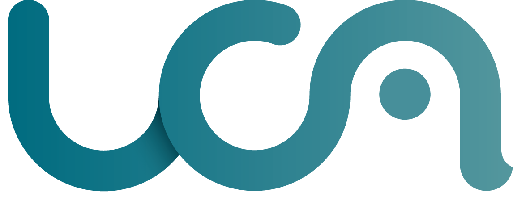
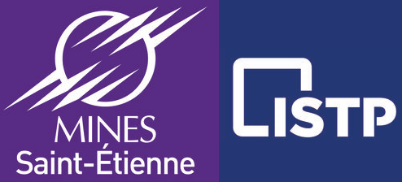
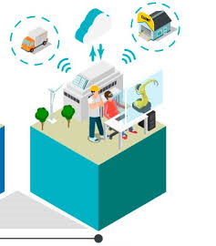
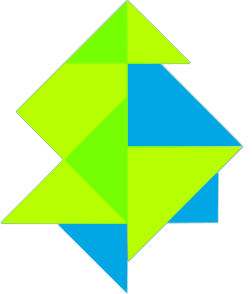
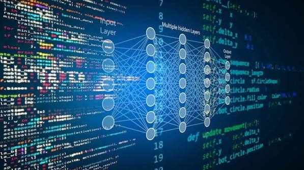
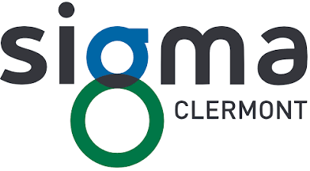

Ingénieur en Génie Industriel | Expert en Science des Données | Industrie 4.0 & Transformation Digitale
Diplômé d'un diplôme d'ingénieur en Génie Industriel et d'un Mastère Spécialisé Expert en Science des Données, je me suis construit à l'intersection de deux univers complémentaires : l'industrie et le numérique.
Au cours de mes expériences chez Constellium et Michelin, j'ai participé à la conception et au déploiement de solutions digitales permettant de collecter, structurer, analyser et valoriser les données industrielles afin d'améliorer la performance des processus et d'aider à la prise de décision.
Ma conviction est simple : la technologie n'a de valeur que lorsqu'elle répond à un besoin concret du terrain. C'est pourquoi je souhaite évoluer au plus près des opérations industrielles afin de mettre les outils numériques, la donnée et l'intelligence artificielle au service de la productivité, de la qualité et de l'amélioration continue.
Aujourd'hui, mon objectif est de faire le lien entre les métiers industriels et les technologies digitales pour accompagner les entreprises dans leur transformation vers l'industrie du futur.
Une trajectoire construite autour de la performance industrielle, de la digitalisation et de l’analyse des données.
01 / 082002 — 2020
ÉTAPE 01

Une enfance au cœur des volcans d'Auvergne
Nébouzat · Rochefort-Montagne · Clermont-Ferrand
Originaire de Nébouzat, un village situé au cœur de la chaîne des Puys en Auvergne, j'ai grandi dans un environnement où les valeurs de travail, de proximité et de simplicité occupaient une place importante.
J'ai effectué ma scolarité primaire à Nébouzat avant de rejoindre le collège de Rochefort-Montagne. Attiré très tôt par les sciences et la technique, j'ai poursuivi mes études au lycée Lafayette à Clermont-Ferrand où j'ai obtenu un baccalauréat scientifique, option Sciences de l'Ingénieur.
À la fin du lycée, souhaitant découvrir rapidement le monde industriel avant de m'engager dans de longues études, j'ai choisi d'intégrer un DUT Génie Industriel et Maintenance plutôt qu'une classe préparatoire scientifique.
AuvergneSciencesSciences de l'Ingénieur
02 / 082020 — 2022
ÉTAPE 02

DUT Génie Industriel et Maintenance
Université Clermont Auvergne
J'ai intégré le département Génie Industriel et Maintenance de l'Université Clermont Auvergne. Cette formation m'a permis d'acquérir de solides bases techniques et une vision globale du fonctionnement des installations industrielles.
Les enseignements couvraient notamment l'électricité industrielle, la lecture et la réalisation de schémas électriques, la mécanique et la résistance des matériaux, l'hydraulique et la pneumatique, la robotique, l'automatisme industriel et la maintenance des systèmes.
Technicien de maintenance en alternance · Secteur desserts
Dans le cadre de ma deuxième année de DUT, j'ai intégré l'entreprise Rians sur son site de production de desserts, au sein de l'équipe maintenance du secteur dessert.
Mes missions consistaient à assurer la maintenance préventive des équipements, les interventions correctives lors des pannes et l'amélioration de la disponibilité des installations. J'ai également développé des compétences de terrain, notamment en soudure MIG et en diagnostic de pannes.
Cette première immersion m'a fait découvrir la réalité des ateliers de production et l'importance de la maintenance dans la performance globale d'une usine. Elle a confirmé mon envie de poursuivre mes études vers des fonctions à plus forte responsabilité.
Maintenance préventiveDiagnostic de panneSoudure MIGProduction
04 / 082022 — 2025
ÉTAPE 04

Diplôme d'Ingénieur en Génie Industriel
ISTP · École Nationale Supérieure des Mines de Saint-Étienne
J'ai poursuivi mon parcours à l'ISTP dans le cadre du diplôme d'Ingénieur en Génie Industriel de l'École Nationale Supérieure des Mines de Saint-Étienne.
Cette formation m'a permis d'approfondir mes connaissances en électrotechnique, mécanique, thermodynamique, mathématiques appliquées, statistiques et gestion industrielle. Elle m'a également apporté une vision globale de la performance industrielle grâce au Lean Manufacturing, à la Supply Chain, à la gestion de projet et au management d'équipe.
J'y ai développé une approche orientée amélioration continue et conduite du changement, essentielle pour accompagner la transformation des organisations industrielles.
Génie industrielLean ManufacturingSupply ChainGestion de projet
05 / 082022 — 2025

ÉTAPE 05

Transformation digitale chez Constellium
Constellium Issoire · Alternance
En parallèle de mon cursus d'ingénieur, j'ai effectué mon alternance au sein de Constellium Issoire, acteur de la transformation de l'aluminium destiné notamment aux secteurs aéronautique, spatial et défense. Intégré au service Digital, j'ai participé à des projets liés à l'Industrie 4.0 et à la valorisation des données industrielles.
Mes missions ont porté sur la mise en place de systèmes de collecte de données, la fiabilisation et la transformation des données industrielles, la réalisation de tableaux de bord Power BI, l'analyse de données pour l'aide à la décision, le suivi d'indicateurs environnementaux et l'analyse de l'usure de composants mécaniques.
Cette expérience m'a permis de découvrir le cycle de vie de la donnée, depuis son acquisition jusqu'à sa restitution aux utilisateurs, et de comprendre l'importance de décisions fondées sur des données mesurées et fiables. C'est là que j'ai développé un véritable intérêt pour la data et la transformation digitale.
Afin d'élargir mon expérience, j'ai réalisé une mission de 12 semaines chez Constellium Singen en Allemagne, au sein du service Méthodes Maintenance.
Mes travaux ont porté sur la création de tableaux de bord Power BI pour le suivi des KPI maintenance, l'analyse des indicateurs MTBF et MTTR, la mise en place d'un système de surveillance SPC et la détection précoce des dérives de fonctionnement et des risques de défaillance.
Cette expérience m'a conduit à évoluer dans un environnement anglophone et multiculturel, renforçant mon autonomie, mon adaptabilité et mes capacités de communication.
Power BIMTBF / MTTRSPCMaintenanceInternational
07 / 082025 — 2026

ÉTAPE 07

Mastère Spécialisé Expert en Science des Données
SIGMA Clermont
Souhaitant approfondir mes compétences dans le domaine de la data, j'ai intégré le Mastère Spécialisé Expert en Science des Données de SIGMA Clermont.
Cette formation m'a permis d'acquérir des compétences avancées en statistiques, Machine Learning, Deep Learning, Business Intelligence, développement Python, bases de données PostgreSQL et ingénierie des données. Les projets réalisés m'ont permis de mettre en pratique les concepts théoriques étudiés.
Au sein de Michelin Motorsport, j'ai contribué à plusieurs projets de digitalisation et d'amélioration des processus. Ma mission principale a consisté à optimiser le processus de demandes d'achat grâce à des solutions numériques.
J'ai mobilisé Power Apps, Power Automate, SharePoint, Power BI et Azure pour structurer le processus. J'ai également participé à des projets de traitement de données avec Databricks et à la création de tableaux de bord décisionnels.
Enfin, j'ai contribué à une étude de prévision des ventes de pneumatiques historiques à l'aide de modèles de Machine Learning, approfondissant mes connaissances en analyse prédictive.
Power AppsPower AutomateSharePointPower BIAzureDatabricksMachine Learning
Étape 1 sur 8
02 / SÉLECTION DE PROJETS
Des problèmes concrets. Des solutions mesurables.
Quelques exemples de réalisations à l’intersection des métiers, des outils numériques et de la donnée.
01Demande
→
02Validation
→
03Suivi
WORKFLOW DIGITAL · POWER PLATFORM
MICHELIN MOTORSPORT01 / DIGITALISATION
Structurer un processus de demandes d’achats
Remplacer un suivi dispersé entre fichiers et échanges manuels par un processus plus clair, traçable et homogène.
Mon rôle
Cartographie du processus, ateliers avec les parties prenantes, développement, tests pilotes et accompagnement des utilisateurs.
La solution
Application Power Apps, automatisations de notifications et validations, archivage SharePoint et tableau de bord Power BI.
↗
Résultat recherché : réduire les tâches administratives à faible valeur ajoutée, améliorer la traçabilité et limiter les erreurs de saisie.
Power AppsPower AutomateSharePointPower BIConduite du changement
IBAPLCDATABIOTSQL
COLLECTER / SURVEILLER / VALORISER
CONSTELLIUM · ISSOIRE02 / INDUSTRIE 4.0
Fiabiliser la donnée industrielle
Extension de la collecte de données machines et mise en place de moyens de supervision pour détecter les équipements qui ne transmettent plus leurs données.
Actions
Installation et configuration IBA, suivi des flux sous Power BI, sauvegardes SVN et scripts Python / Batch.
Impact documenté
Parc de machines équipées passé de 25 à 57 ; formation de 35 collaborateurs et amélioration de la visibilité sur les flux.
IBAPower BIPythonBraincubeSVN
MTBF↗Fiabilité
MTTR↘Réparation
DISPO.◌Disponibilité
MAINTENANCE · KPI · POWER BI
CONSTELLIUM · SINGEN03 / DATA ANALYTICS
Donner de la visibilité à la maintenance
Construire des tableaux de bord pour mieux suivre les indicateurs de fiabilité et de disponibilité des équipements.
Actions
Analyse des données, création de visualisations Power BI et échanges avec les équipes maintenance et automatisme.
Apport
Indicateurs partagés pour faciliter le suivi des tendances et repérer plus tôt les dérives.
Power BIMTBFMTTRAnalyse de données
ⓘ Les résultats présentés sont qualitatifs ou issus des éléments de mon CV. Les détails techniques et données internes restent volontairement confidentiels.
03 / COMPÉTENCES
À l’aise entre le terrain et le code.
Une double compétence pour comprendre les besoins opérationnels et construire des outils adaptés.
01
⌘
Data & Business Intelligence
Transformer des données en indicateurs lisibles pour soutenir la décision.
Power BISQLPythonDatabricksMachine Learning
02
⤧
Digitalisation des processus
Concevoir des applications métiers et automatiser les tâches répétitives.
Power AppsPower AutomateSharePointMicrosoft 365
03
⌬
Industrie 4.0
Collecter, superviser et valoriser les données issues des équipements industriels.
IBABraincubeMaintenanceSPC
04
↗
Gestion de projet
Faire le lien entre utilisateurs, équipes techniques et objectifs opérationnels.
Analyse du besoinTestsFormationAccompagnement
MA MÉTHODE
01 Comprendre le terrain
→
02 Construire simplement
→
03 Mesurer l’impact
04 / CONTACT
Un besoin à résoudre ? Parlons-en.
Je suis ouvert aux opportunités en data, solutions digitales et transformation industrielle.